Ju Faddul & Luiz Fernando Toledo
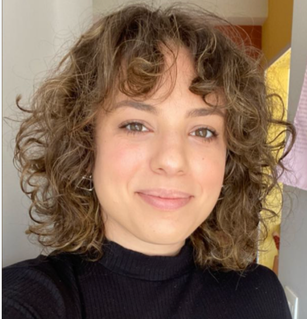
Ju Faddul
Jornalista independenteColaboradora fixa do New York Times e da revista piauí. Suas reportagens já ganharam financiamento do Pulitzer Center, Earth Journalism Network, Princeton University e Unesco.
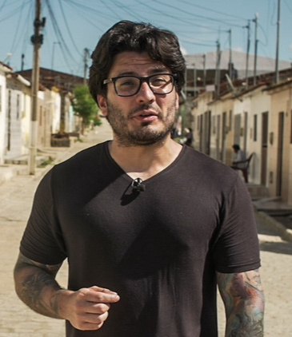
Luiz Fernando Toledo
BBC News Brasil · Univ. CambridgeRepórter da BBC News Brasil em Londres e pesquisador da Universidade de Cambridge. Trabalha com dados abertos, transparência e investigações sobre políticas públicas.
O que ainda vem por aí
O que veremos hoje
- Como usar dados e por quê?
- Onde buscar dados? O que fazer com eles?
- Dados para além das planilhas: o caso Epstein Files
- O portal da transparência do governo federal e suas pautas
- As dicas de ouro da LAI
Dados além de planilhas: o caso Epstein
(e como a IA bagunçou conceitos)


NotebookLM, o novo jeito (quase obrigatório) de pesquisar em muitos documentos ao mesmo tempo
Carregue PDFs, depoimentos, transcrições — e converse com a IA sobre o que está dentro deles. Ideal para investigações com centenas de arquivos.
Raspagem de documentos e resumo por meio de Codex
O agente da OpenAI/ChatGPT
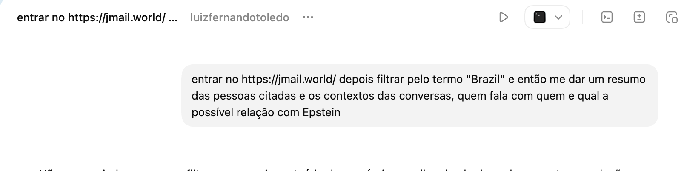
O que o Codex encontrou nos e-mails sobre o Brasil
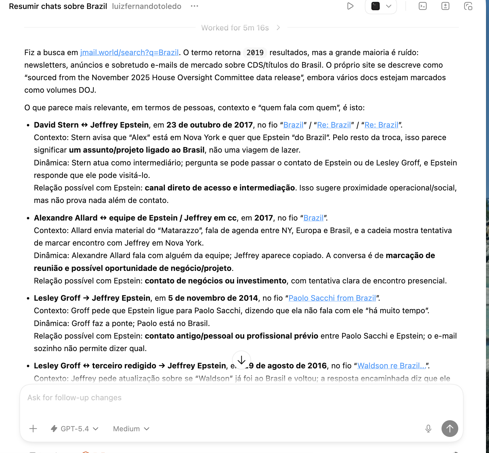
O que é um agente de IA?
Um programa que recebe uma tarefa em linguagem natural — como "leia estes 500 PDFs e me diga quem aparece mais de uma vez" — e executa sozinho, passo a passo, sem que você precise programar nada.
- Codex (OpenAI) — roda no navegador, dentro do ChatGPT. Raspa sites, analisa documentos em lote e cruza informações
- Claude Code (Anthropic) — roda no navegador, no terminal ou na nuvem. Leitura de documentos longos, apuração assistida e automação
- Ambos funcionam da mesma forma: você descreve a tarefa em português e o agente escreve e executa o código sozinho. Não precisa saber programar
Por que usar dados no jornalismo?
(e alguns exemplos práticos)
Por que usar dados no jornalismo?
- Descobrir histórias inéditas
- Destrinchar falas oficiais e identificar exageros ou informações falsas
- Mais independência em relação às assessorias e aspas oficiais
- Qualificar o debate sobre políticas públicas
- Abrir caminho para conversar com fontes
Por que usar dados no jornalismo?
- Avançar em um tema de maneira independente — ou em parceria com pesquisadores, cientistas sociais, MP/Judiciário — a partir de descobertas próprias
- Novos serviços e produtos jornalísticos
- Encontrar várias histórias nos mesmos dados
- Ampliar o engajamento do leitor e a credibilidade
- Mais credibilidade junto às fontes e à audiência

Aluno pobre tem só 0,16% de chance de estar entre os melhores do Enem
Análise de 1,3 milhão de candidatos mostra que fatores socioeconômicos pesam até 85% no resultado. Entre alunos ricos, a chance de estar no topo é de 25%.
LER MATÉRIA
Os 2,8 mil candidatos multados por danos ao meio ambiente
Levantamento da BBC mostra políticos que disputam cargos municipais mesmo com multas ambientais em seus nomes.
LER MATÉRIA
Empresários do mercado imobiliário são metade dos 50 maiores doadores
Investigação sobre o financiamento das campanhas municipais de 2024.
LER MATÉRIA
'Turismo de Instagram' aumenta violações ambientais em Fernando de Noronha
Pousada de celebridades e turismo de massa pressionam o arquipélago protegido.
LER MATÉRIA
Trabalho escravo: como produto de mão de obra escrava vai parar na sua calçada
LER MATÉRIA
Como emenda apoiada por Hugo Motta foi parar em obra com produto de trabalho escravo
LER MATÉRIA
Candidatos que usam propostas idênticas em planos de governo
"Nada se cria, tudo se copia", diz autor de plano.
LER MATÉRIACom IA ficou possível automatizar o mesmo levantamento
Essa reportagem foi feita nas eleições de 2024. Em 2026, com IA, eu consegui reproduzir o mesmo levantamento em alguns segundos — mas eu precisei desenvolver, antes, o método para fazer isso.
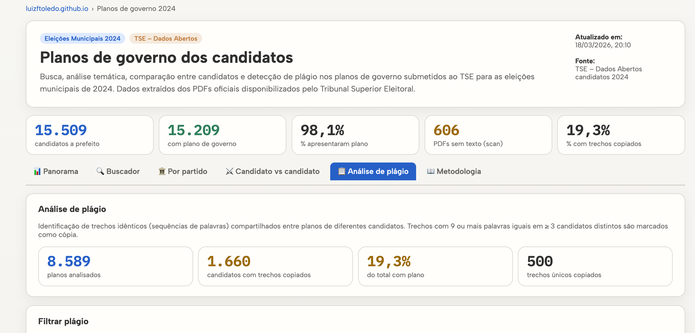
O que você precisa saber sobre o uso de dados no jornalismo
Os dados trazem uma informação realmente relevante?
- Por que leitores vão se interessar? No que isso muda a história contada?
- Sempre compare os números com algo compreensível ou séries históricas — gastar "xx milhões" é muito ou pouco?
- Como você vai ilustrar esses dados para não ficar chato?
- Não é porque usou dados que virou relatório. Simplifique sempre e foco na história!
Menos números, mais história
- Use poucos números e mais contexto
- Simplifique conclusões sempre que possível
- Dê exemplos ou escolha somente as partes mais relevantes
- Cuidado com "o Estado campeão" ou "a cidade com a maior quantidade" — na maioria das vezes isso não significa nada além do tamanho da população
A história sempre vai importar mais do que os dados
Quando bem contada, uma pauta com dados ganha rosto, nome e impacto. Sem história, vira relatório.
LER MATÉRIA

Como entrevistar uma fonte & como entrevistar dados
Entrevistar uma fonte
- Conseguir espaço na agenda (acessar a fonte)
- Conhecer a fonte
- Pesquisar o histórico da fonte
- Perguntas que tirem a fonte da zona de conforto
- Demonstrar contradições da fonte
- Identificar erros e conteúdo incorreto na fala
- Traduzir jargões para o público
- Informações inéditas e de interesse jornalístico
- Cruzar informações da entrevista
Entrevistar dados
- Ter acesso aos dados
- Conhecer colunas, células e metadados
- Pesquisar quem e como produziu os dados
- Análises que identifiquem recortes novos
- Encontrar informações contraditórias e/ou erradas
- Corrigir/adaptar o que for necessário
- Transformar conforme a necessidade do projeto
- Informações inéditas e de interesse jornalístico
- Cruzar com outros dados
Perguntas respondidas (parcialmente) por dados
O portal da transparência, onde a apuração começa
portaldatransparencia.gov.br
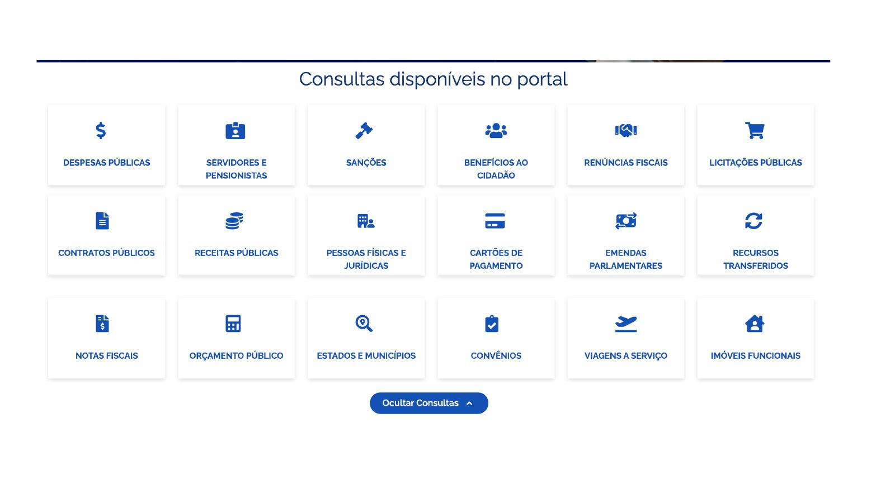
Investigue pessoas, servidores e empresas
Busque por "Neymar da Silva Santos Junior" no Portal da Transparência e me conte algo estranho sobre ele.
portaldatransparencia.gov.br


Agora, busque por Ailton Gonçalves Moraes Barros
Ex-major do Exército indiciado pela PF no caso da fraude nos cartões de vacinação de Bolsonaro. Preso em maio de 2023 na Operação Venire, foi solto em setembro pelo STF sob medidas cautelares (tornozeleira, passaporte retido, proibição de redes sociais) e também foi indiciado no inquérito do golpe de Estado.


Investigue gastos públicos
- Cartões corporativos
- Licitações e contratos
- Convênios e transferências
- Emendas parlamentares
- Orçamento de órgãos
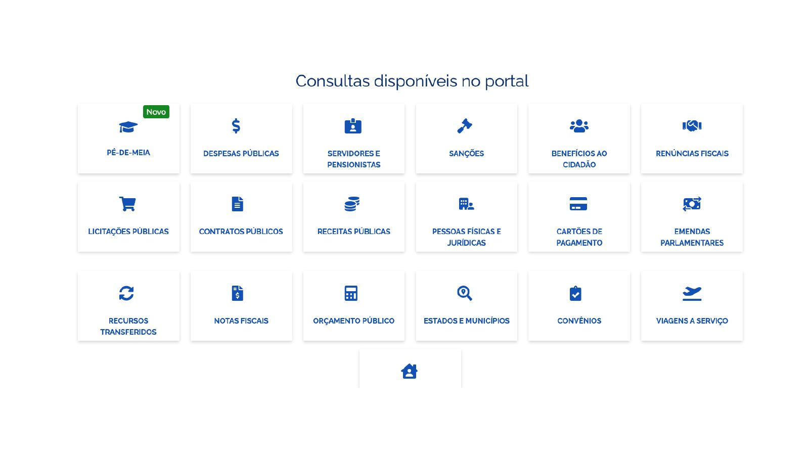
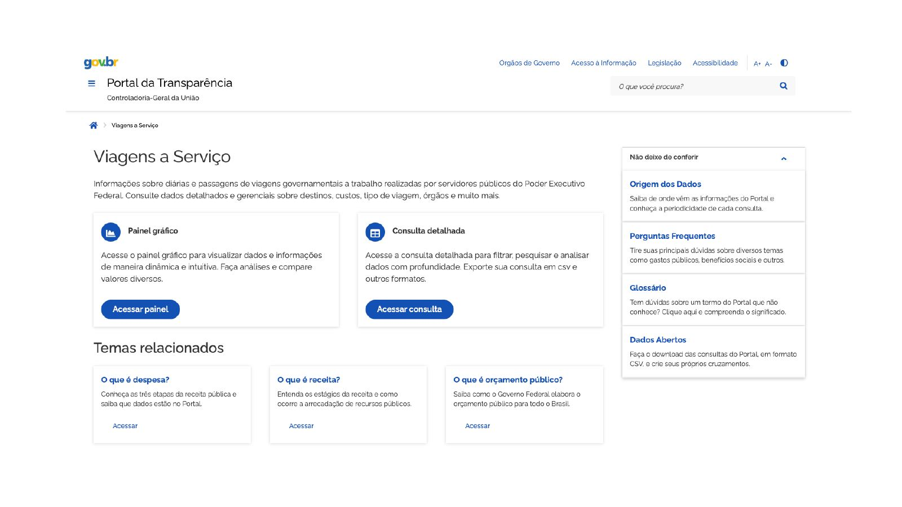
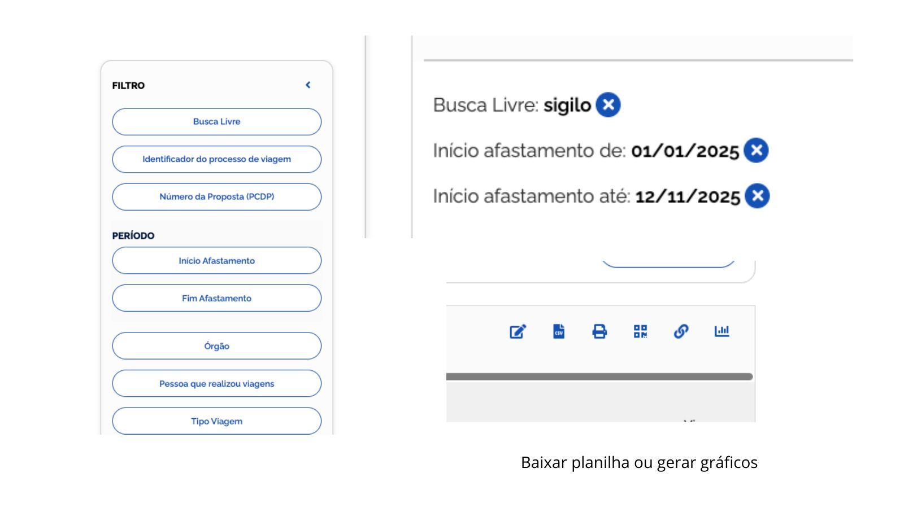
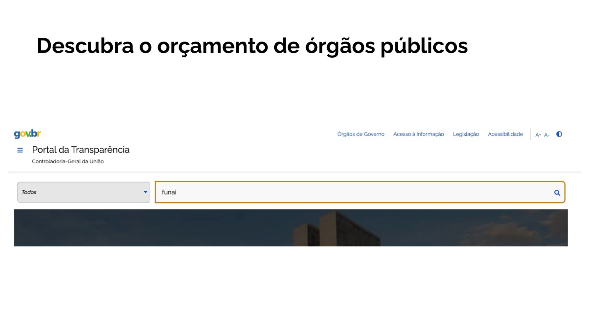
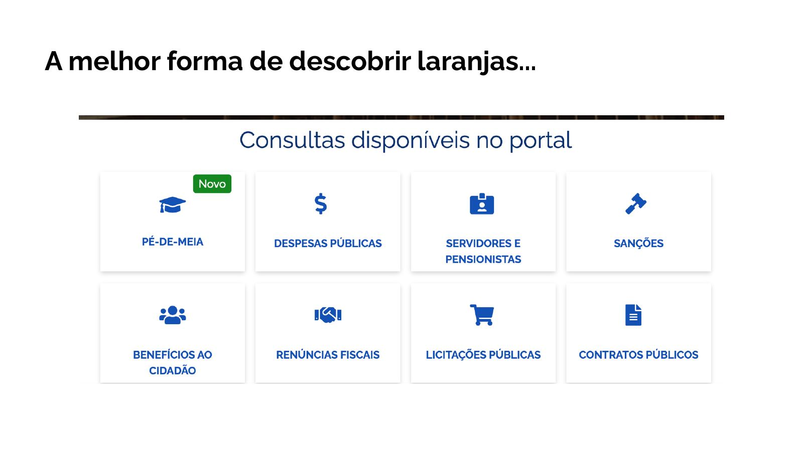
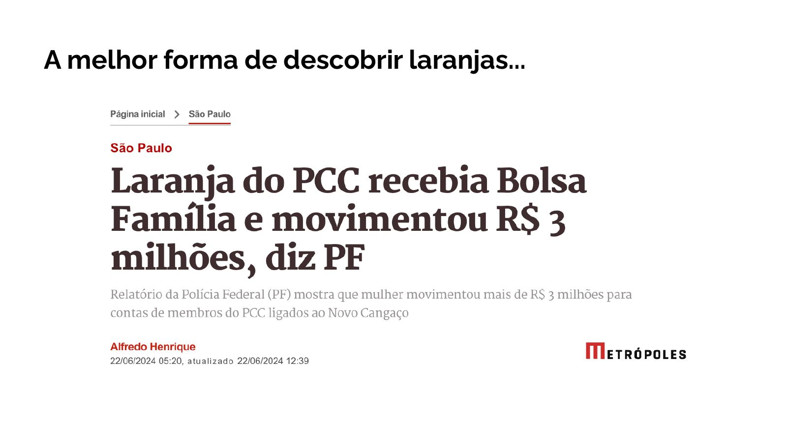
Dados públicos organizados por parceiros
Ferramentas gratuitas que facilitam a apuração
Pesquisa em processos judiciais em massa de uma só vez
Parceria com plataformas em busca de acesso aos dados e documentos
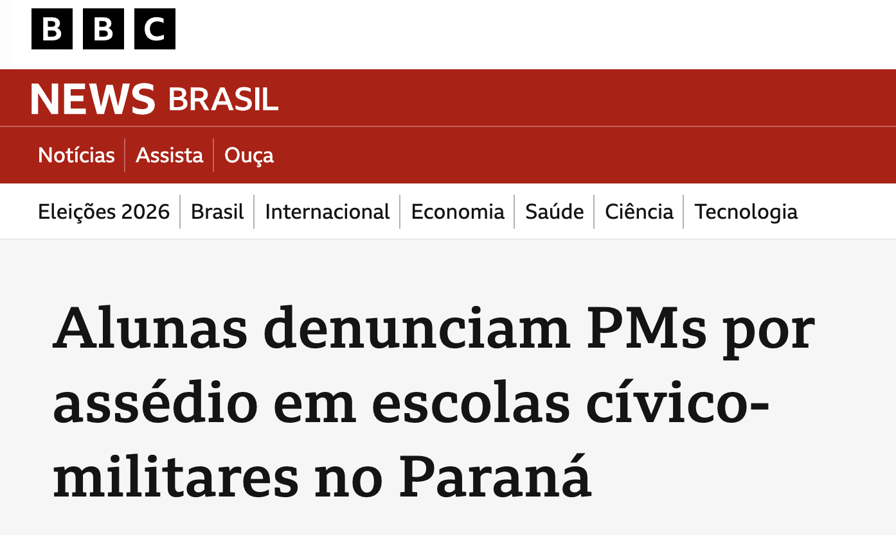
Não encontrou a informação? Então acione a LAI.
Lei de Acesso à Informação · Lei 12.527/2011
Por que usar a LAI
- Chance de "brigar" pelo acesso a dados que o poder público não se interessa em divulgar
- Encontrar informações de todo tipo que não se enquadram como dados abertos: fotos, vídeos de fiscalizações, arquivos antigos
Quando NÃO usar a LAI
- Buscar primeiro nos portais de transparência, releases e sites oficiais
- Verificar se alguma instituição de pesquisa ou ONG já trabalha com esses dados. Ex: Fórum Brasileiro de Segurança Pública
- Está com pressa? A LAI pode demorar — talvez não seja a melhor opção
Para quem perguntar?
- Executivo, Legislativo e Judiciário
- Sociedades de economia mista e demais entidades controladas direta ou indiretamente pelo governo
- Entidades privadas sem fins lucrativos que recebam recursos públicos
Qual é o prazo de resposta?
Onde pedir?
Órgãos públicos não são "donos" das informações
- Faça quantos pedidos de informação julgar necessário
- Dê apenas as informações necessárias para se chegar aos dados que você busca
- Sua instituição ou empresa que usará as informações não precisa estar descrita no pedido
- Sigilo só pode ser aceito se justificado de forma específica e excepcional
- Se não tem uma regra específica, a informação é pública
O que pedir quando a autoridade fala
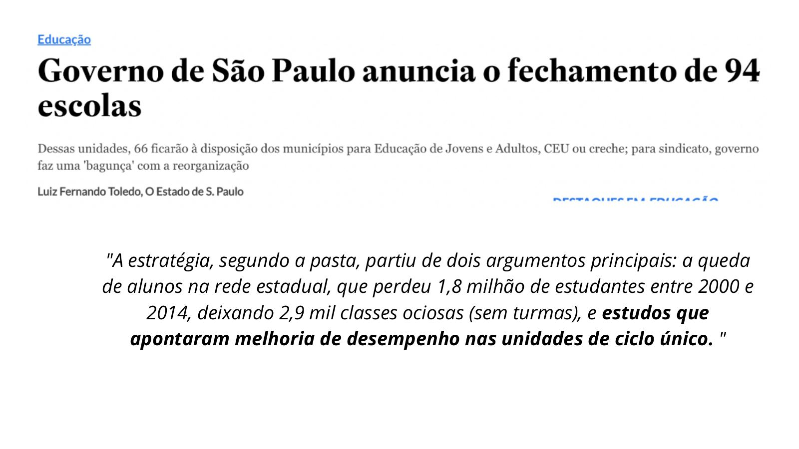
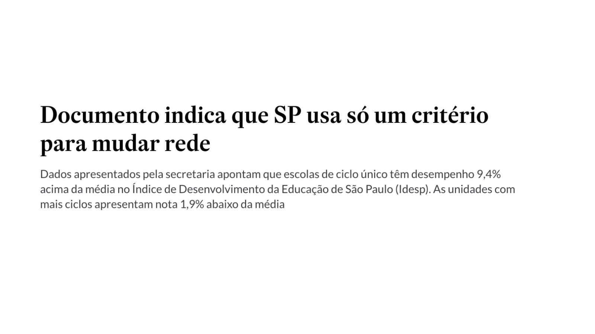
Estrutura dos pedidos de informação
Local
"Dados de todos os municípios do estado, cidade por cidade"
Período
"Dados para os últimos cinco anos, mês a mês"
Detalhes que interessam
"Dados devem ser divididos por gênero, raça, separados por distrito"
Contexto que você já sabe
Explique ao órgão tudo que você conhece: onde está a informação, quem a produziu. Pesquise antes, fale com quem é da área.
Solicite dados em formato aberto
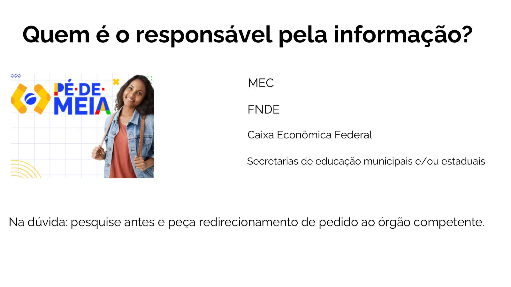


Dado público não é sinônimo de dado correto
- Cheque outras fontes de dados sempre que possível
- Consulte o que já foi publicado sobre o tema e fale com especialistas
- Servidores entenderam o pedido corretamente?
- Você entendeu o que a informação representa e o contexto em que foi coletada?

21/04, 19h — Como conseguir financiamento para as suas investigações
Fellowships, grants, cartas de recomendação, editais no Brasil e no exterior.
Vamos aprender a escrever projetos e encontrar oportunidades reais de financiamento.